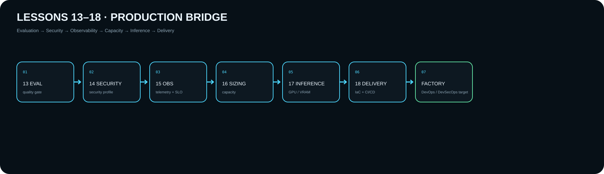

13 · Evaluation
Golden set, RAGAS/Judge, metrics, quality gate, evidence.
Открыть →G4 → G5
Шесть уроков образуют один production-контур: Evaluation → Security → Observability → Sizing → Inference → IaC/CI/CD. DevOps/DevSecOps Factory активируется только после runtime evidence Lesson 18.
Production bridge

Golden set, RAGAS/Judge, metrics, quality gate, evidence.
Открыть →Threats, PII sanitizer, guardrails, secrets, security tests.
Открыть →Metrics/logs/traces, SLO, alerts, runbooks.
Открыть →Workload, CPU/RAM/GPU/storage, capacity/TCO.
Открыть →VRAM, quantization, throughput, GPU profile.
Открыть →Terraform, quality/security gates, VPC/S3/Kubernetes target.
Открыть →Target after Lesson 18 homework
Validated Dev Pack → Build → Tests → Eval Gate → Security Gates → SBOM/Scan → Artifact → Docker/Kubernetes target → Deploy → Verify → Evidence → Release/Rollback.
Сейчас это TARGET. Kubernetes/Factory не считаются развернутыми до появления реального Terraform + CI/CD + runtime evidence.